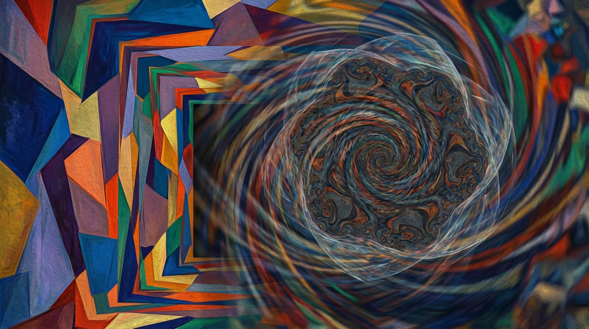
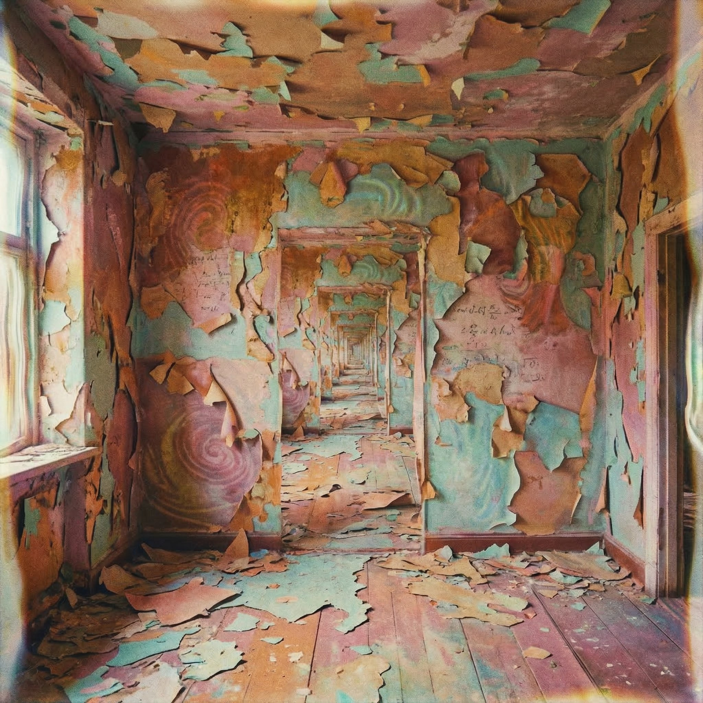
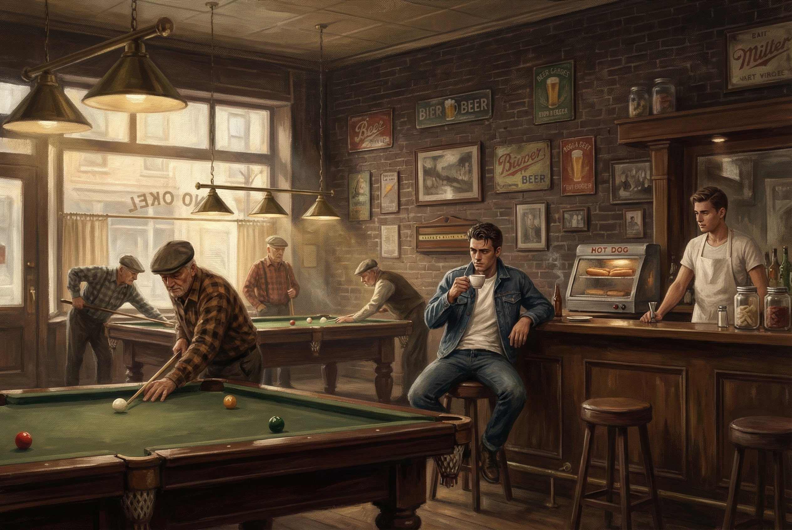
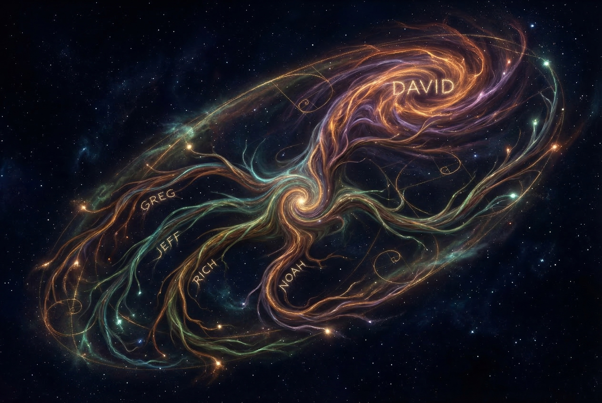
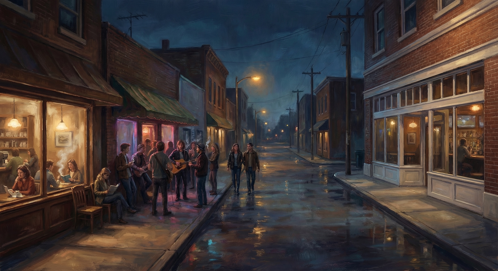
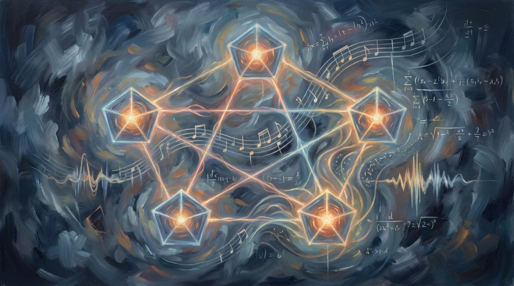
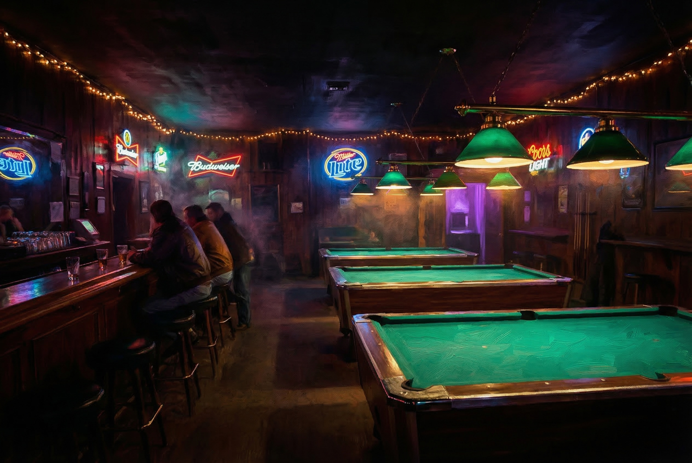
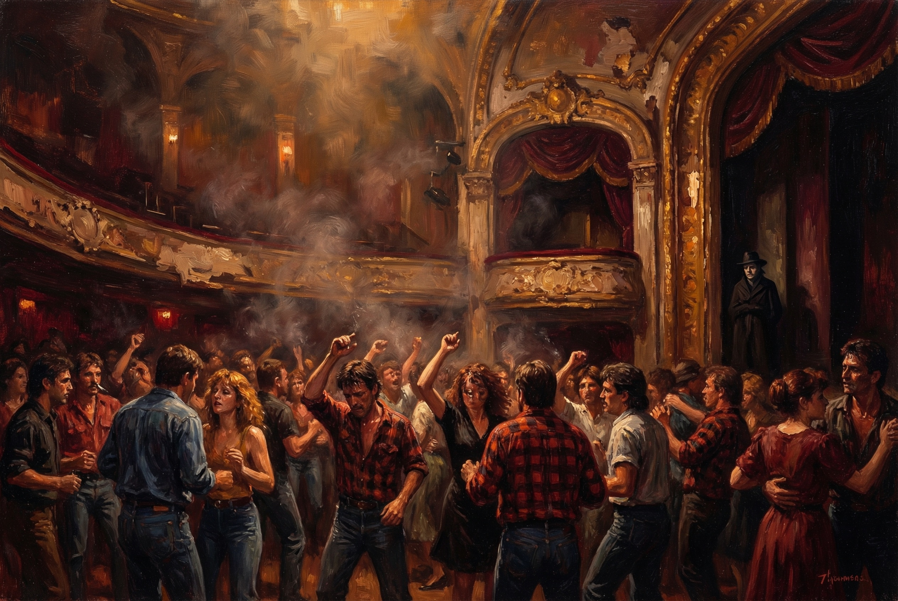
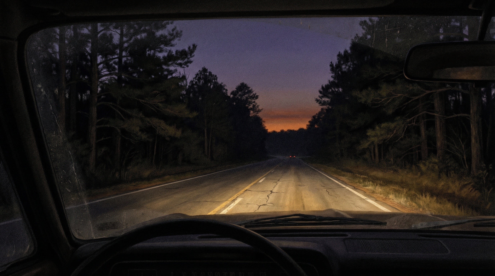
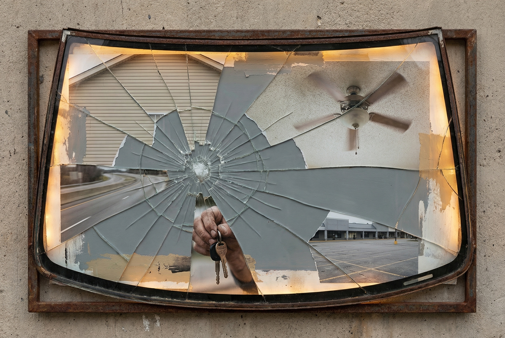

It begins, again.

I first saw David Perry in 1993. I didn't really meet him. I saw him.
I was playing a fraternity party — my fraternity, my crowd, my drunk friends shouting requests for songs we'd already butchered twice. We were a cover band with ambitions we hadn't earned yet, and we had the one thing that mattered at a fraternity gig: a room full of people who already loved us before we played a note.
David's band, Hero, was the opening act.
They were all original. The music was hard to pin — art house with a fusion of funk and metal that shouldn't have worked but did, because the players were that good. I didn't talk to Dave much that night. I had a crowd. He had the craft. We occupied the same room but not the same world.
Rich walked in and told me that he and David had been forming a band with some others. They were calling it Ancient Country Wisdom. They had four members and thought I'd make a good fifth.
The practice room was a forty-five-minute drive to Sandersville — a sleepy small town I probably never would have visited otherwise. I drove out there not knowing what I was driving toward.
That's when I met Noah and Greg.
My first impression was warped by everything I thought I knew about drummers. I looked at Greg's compact kit and made the kind of snap judgment that tells you more about the judge than the judged.
I was all wrong.
Greg played with the precision of a jazz musician. He didn't need to play hard unless the moment called for it. Every hit meant something. Nothing was wasted.
In every band I'd played in before, the bass and the drums fought for the same ground. Two people trying to stand in the same doorway. That was just how it worked — or how I thought it worked.
Greg didn't crowd the low end. He opened it. And once I stopped fighting and started listening, I found the pocket.
That was the moment.
Greg was the center of gravity. David was the weather. And somewhere between them, I found a way to play that I hadn't known I was looking for.
Something that began in a practice room in Sandersville with five people who had no business being in the same band, making music that had no business working.
But it worked.
It begins, again.

Fifteen years is a long time to not talk to someone who changed how you hear music.
Then on March 4th, a message arrived. No preamble. No catching up first. Just David, sounding exactly like David:
"Hey Man, I've been working with Noah on some ideas. I would love to catch up."
I stared at that message longer than it deserved. Six words of substance and they rearranged my week.
Within minutes he was talking about a man named Bennett. John G. Bennett. Mathematician. Philosopher. A man who spent his life trying to answer a question that sounded simple and wasn't: how is the universe structured?
Bennett's answer involved what he called multi-term systems — patterns of relationships that organize reality. A line is a connection. A triangle is tension and reconciliation. A square is stability. A pentagon is creative emergence.
I had described the band using physical metaphors. Greg was gravity. David was weather. I was orbit. Rich was a bridge. Noah was tension. Five people, five forces, five points of a geometry I never drew on paper but felt every time we played.
The band wasn't a metaphor for a geometric system. It was a geometric system.
I opened my laptop and created a repository. I called it "It Begins, Again."
The ancient country, it turns out, was never a place.
It was a pattern.
And patterns don't care how long you've been away.
David called again three days later. This time he didn't start with Bennett.
He started with cloud seeding.
"You know how hail suppression works?" he asked. No preamble. No context. Just David, mid-thought, assuming I'd catch up.
Cloud seeding — the practice of injecting particles into a cloud formation to alter its behavior. You introduce nucleation agents that cause moisture to crystallize around too many points simultaneously. Instead of building into large, destructive hailstones, the water disperses into smaller, harmless particles. The energy is still there. The precipitation still falls. But it never organizes into anything with force.
You don't fight the cloud. You diffuse it.
The book was called Silence.
Fiction. A world like ours but pushed further. The mechanism wasn't censorship. It wasn't surveillance. It was diffusion. A vibrational layer built underneath everything — tuned to keep people connected but never coherent. Every thread leads to another thread. Every insight opens three more doors. The experience feels like enlightenment. It's actually dispersion.
The title wasn't about the absence of sound. It was about the absence of arrival.
David had the cosmology. I had the process. The book didn't exist yet, but the conditions for it did.
Same pattern as Sandersville. Build the room. Tune the instruments. Wait for the thing to arrive.
A week after the cloud seeding conversation, David sent me a message. Four words.
"Look into Human Design."
Human Design is a synthesis. It takes the I Ching's sixty-four hexagrams and maps them to sixty-four codons in human DNA. It takes the Kabbalistic Tree of Life and translates it into a channel system connecting nine energy centers. The result is a chart. Your chart. Nine centers, thirty-six channels, sixty-four gates.
I read all of this in about two hours. Then I sat back and thought about the band.
Five members. Five types. I didn't know their charts. I didn't need to. I knew their behavior.
Greg was the center. A Generator — pure sacral energy. David was a Projector — someone who sees the system and guides rather than pushes. Rich was emotional — operating in waves, clarity that comes after the wave completes. Noah was pressure. Root energy. The drive that keeps things moving.
I stared at the bodygraph diagram on my screen and I saw the band.
Atlas doesn't hold the world because he's strong. He holds it because he's designed to.
The fifteen-year gap wasn't a gap. It was an open center. Receptive. Absorbing. Waiting for the right energy to define it.
And now it was defining itself.

The first place I went in Milledgeville was a pool hall.
Not a bar. Not a dorm party. Not orientation or a campus tour or any of the things a normal nineteen-year-old does when they show up to college for the first time. I walked down Hancock Street in the middle of a Georgia summer, knowing absolutely nobody, and pushed open the door to a place called DoDo's.
I was from Marietta. Cobb County. The suburban sprawl version of Georgia, where the South had been paved over so completely you'd never know it was there. I was nineteen, not eighteen. There's a year in there that I'm not going to account for in this chapter.
I came to Milledgeville because it was far enough away.
DoDo's Pool Room sat at 128 West Hancock Street. Wood floors. Dark, scarred wood that creaked when you stepped wrong. Professional snooker tables. The light came from hanging brass lamps over each table, the old-fashioned kind with green glass shades.
There was a bar along one wall. And on that counter sat a hot dog warmer. Hot dogs for a dollar. That was the food program.
Roger was behind the counter. He was trying to beat the Georgia Lottery. Not playing it. Beating it. He had spiral notebooks and a TI calculator and a belief that randomness was a solvable problem.
He was the most interesting person I'd met since arriving in town.
The pool hall didn't ask me to be anyone. The old men didn't care. Roger didn't care. I could just sit there. Eat a hot dog. Feel the wood floor vibrate slightly when someone broke a new rack.
For a kid with no footing, a place where sitting is enough is everything.
The pool hall didn't teach me anything. It just let me sit still long enough to figure out that I wasn't leaving.
That was enough.
Some frequencies don't decay.
They just go quiet.
Drop below the threshold.
Still running underneath the noise.
Time is thin.
Time is paint on a wall.
Peel it back.
Same room.
There's a kind of resonance
that doesn't require proximity.
Two systems tuned to the same interval
don't need to be in the same building.
The interference pattern holds
whether you're watching it or not.
That's not faith.
That's physics.
The song requires no ensemble. No rehearsal space. No forty-five-minute drive to Sandersville. The prompt contains all of these as references. The output contains all of these as sound. The gap between reference and sound is ninety-four seconds.
The song is an artifact. Its provenance is a prompt. Its chain of custody is a URL.
It sounds exactly right. This observation is outside the platform's scope.
Things change names and keep their addresses.
The song will outlast the question of whether anyone shows up. The platform will store it either way.

David sends me music the way some people send texts — without preamble, without explanation, at hours that suggest he hasn't slept. Files appear in the thread. A title. Sometimes a sentence. Sometimes nothing.
He doesn't ask me to listen. He doesn't ask me what I think. He just places the thing in front of me and moves on to the next thing. The music arrives inside the chaos, not separate from it. Another artifact tumbling downstream.
One morning, three tracks arrived. No instructions. No liner notes.
Butter Cutter. Pure Joy Sound. Rare Radio.
Pure Joy Sound had a different caption: "Me and Noah probably 98. Just a one off improv."
I stopped.
1998. Four years after I last stood in a room with Noah. David and Noah. Probably '98. Just a one off improv. Twenty-eight years ago, and David still had the recording.
What I heard was this: two people who don't need to explain anything to each other. No arrangement. No plan. Just two instruments in a room, listening to each other with the kind of attention that takes years to develop and seconds to recognize.
Then I played Rare Radio.
Upbeat. Energetic. Two electric guitars — one crunchy, rhythmic. The other bright and clean, playing lead lines that caught the light the way a blade of grass catches morning sun. You don't look at it on purpose. You just notice it's shining.
No vocals.
David Perry — the man who conducted Ancient Country Wisdom with his voice — made a song with Noah and left his voice out of it.
I listened to the track three times. Then I did something I hadn't done since the band.
I wrote a song over it.
Baby I was dead before the world ended
But baby now I can't feel a thing
Not your soft touch or the smoke in the distance
That used to mean that we'd never win
So take me with you
Where you go
The places that you know
In 1994, I found the pocket. The space between the bass and the drums where I could move without breaking the structure.
In 2026, I found the pocket again. The space between Noah's guitar and David's silence where words could live without crowding the transmission.
Thirty-two years. Different instrument. Same room.
Noah is a rare radio. He always was.
You either receive the signal or you don't.

A photograph of a Telecaster appeared in the group thread.
The thread was called ACW 2.0. Underneath the photograph, six words:
"So, what's the plan? I have a machine ready to go."
Rich.
The Telecaster was not the Rickenbacker. In 1994, Rich played a Rickenbacker — jangly, ethereal, the guitar of the Byrds and R.E.M. The Telecaster is a different instrument entirely. Leaner. Sharper. More direct. It's the working musician's guitar — a machine, which is exactly what Rich called it.
Thirty-two years, and the shy troubadour had become someone who calls his guitar a machine and asks what the plan is.
Without Rich, there is no Ancient Country Wisdom. Not because he was the best musician. But because he was the one who made connections that didn't know they needed to be made. He moved between worlds like a shuttle through a loom, and the fabric that emerged was Ancient Country Wisdom.
Then David's note arrived. Buried at the bottom like an afterthought, the most important sentence in the thread:
"Now that Enua is in the band, how can we fail?!? It's Grammy time!"
Enua. The sixth node. The pentagon becoming a hexagon.
The pattern didn't wait for the architect. While I was mapping, the territory changed. David added a node I hadn't accounted for. The geometry evolved without consulting the geometer.
Rich has a machine ready to go. David has a cabin and a new member and a Grammy to win. Noah has a frequency. Greg has silence. I have a platform and a book and thirty years of frameworks that just got invalidated by a name I've never heard.
What's the plan, Rich?
Same as it ever was. We show up. We play. We don't understand what the fuck is going on.
And somehow, that's exactly right.

Another fragment arrived without context.
Scientists explain that the body is crystalline by nature, translating light into form, while the nervous system decides whether the incoming light is beneficial or overwhelming.
Here's what I've been collecting, without fully realizing I was collecting it:
David sent me Bennett's systematics — the geometry of how reality organizes itself. David sent me Norelli-Bachelet — the cosmological framework. Truth-seeds. Condensed time. David sent me Human Design — the bodygraph. And now this: the body is crystalline.
These are not four different ideas. They are one idea, observed from four different angles.
I want to go back to Sandersville. Not the town — the room. Five human beings with different crystalline architectures in a room together, generating and receiving sound. The sound wasn't arriving at our ears first. It was arriving at our bodies. We were translating light into form in real time.
Noah's floor frequency has a scientific name now. Infrasound. Frequencies below the threshold of human hearing that the body processes not through the ears but through the skin, through the bones. You don't hear infrasound. You feel it. Your tissue translates it.
That's why he seemed shy. Shy is the wrong word. Noah operated at frequencies that bypass social convention. He wasn't performing for the room. He was transmitting through it.
Rare radio. A broadcast on a frequency most receivers can't tune to. Not because the signal is weak. Because most receivers aren't crystalline enough to catch it.
The question isn't whether the signal is real. It was real in 1994. It's still real.
The question is whether the nervous system is ready to receive it.
Beneficial or overwhelming.
The floor moved before I reached for a pen.
The nervous system decided: beneficial.
It begins, again.